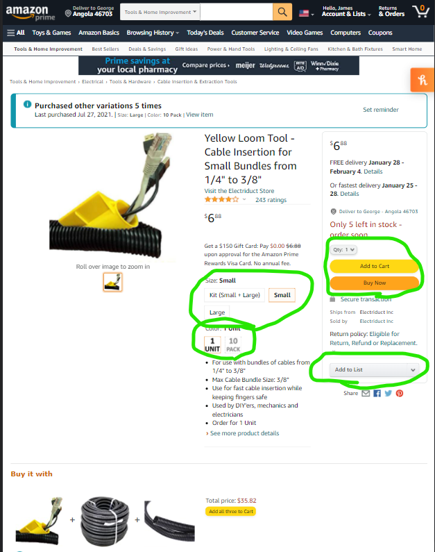
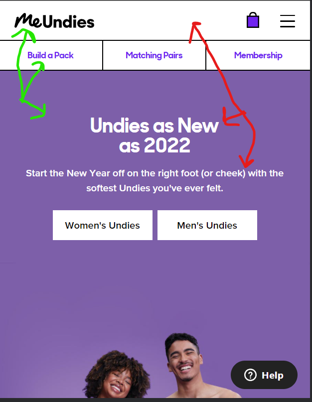
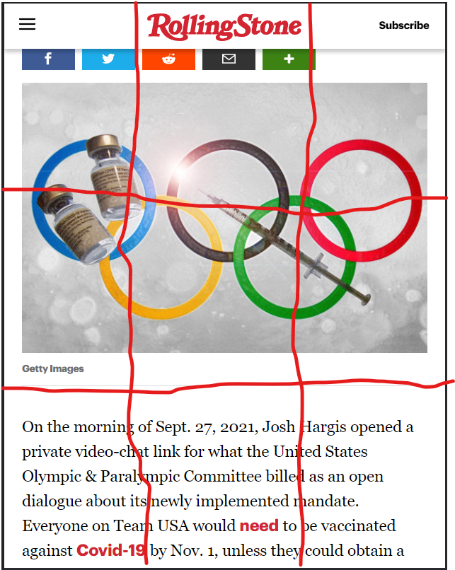

Hick's Principle
Amazon
amazon.com Hick's Law is all about limiting the amount of options a user has to look at so they're able to make quick decisions and not get frustrated by processing too much information. In this product page from Amazon, here the choices presented are simple: select a size, a quantity, and whether you would like to buy right away or add it to a list for later.
Contrast
MeUndies
meundies.com Contrast is all about pairing together light and dark elements to make things visually spaced out and more appealing to the eye. The MeUndies current homepage does this by placing dark text within a light nav bar and white text within a darker purple background. The mix of light and dark leads to a visually appealing website that doesn't feel cluttered.
Rule of Thirds
Rolling Stone
rollingstone.com The Rule of Thirds is all about presenting your artwork (or website) in such a way that if you were to dissect the piece into roughly thirds, you place the most visually important elements on those third-lines (or even more importantly, on the intersection of lines). On the Rolling Stone website, the intersections on the top show shocking representations of drugs amid the Olympic rings, sure to get you intrigued (or worried) enough to keep reading.